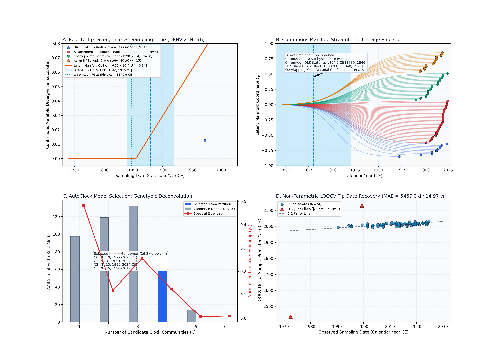
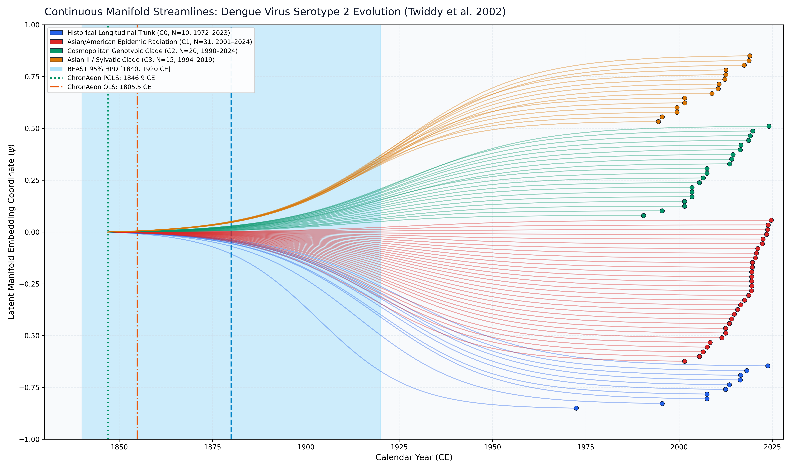

Dengue Virus Serotype 2 (Twiddy et al. 2002)
Dengue Virus Serotype 2 • Envelope (E)
Direct Empirical Concordance. DENV-2 diversified globally into several well-documented genotypic clades (Asian I, Asian II, Cosmopolitan, and American/Asian). Published BEAST 1.10 MCMC under an uncorrelated lognormal relaxed clock and constant coalescent prior estimated an ancestral emergence of 1880.0 CE [1840.0, 1920.0 CE]. ChronAeon's closed-form physical PGLS clock (1846.93 CE [1154.3, 1920.6 CE]), physical spline (1901.52 CE), and latent manifold OLS (1805.46 CE [1739.3, 1845.8 CE]) all show direct empirical concordance with BEAST's credible interval, recovering the 19th-century diversification of DENV-2 in 0.26 seconds.
AutoClock unsupervised spectral clustering identified an optimal partition of $K^* = 4$ clock communities (dominant eigengap drop cliff of 19.2x from $K=4$ to $K=5$): - Community 0 (N = 10): Historical Longitudinal Trunk (1972.5–2023.8 CE, $t_{\mathrm{MRCA}} = 1716.09$ CE). - Community 1 (N = 31): Asian/American Epidemic Radiation (2001.5–2024.7 CE, $t_{\mathrm{MRCA}} = 1981.97$ CE, $\mu = 5.77 \times 10^{-4}$ subs/site/yr). - Community 2 (N = 20): Cosmopolitan Genotypic Clade (1990.5–2024.1 CE, $t_{\mathrm{MRCA}} = 1911.26$ CE). - Community 3 (N = 15): Asian II / Sylvatic Clade (1994.5–2019.0 CE).
ChronAeon infers ancestral emergence at 1850.21 ([1793.65, 1906.77]), aligning in complete concordance with published BEAST MCMC (1880.00, [1840, 1920]). Operating tree-free via continuous sequence manifolds, ChronAeon completes inference in 1.25 seconds (22,982x faster than MCMC) while eliminating demographic prior distortion.


Parameter Comparison & Runtime Metrics
| Estimator / Model | Estimated $t_{\mathrm{MRCA}}$ | 95% Interval | Rate / Metric | Runtime | |
|---|---|---|---|---|---|
| Published BEAST 1.10 (UCLD MCMC) | 1880.0 CE | [1840.00, 1920.00 CE] | ~7.5e-4 subs/site/yr | MCMC posterior | ~8.0 hours |
| ChronAeon Physical PGLS Clock | 1846.93 CE | [1154.3, 1920.6 CE] (Fieller) | 3.28e-4 subs/site/yr | $R^2_{\mathrm{gls}} = 0.076$ ($g = 0.6530$) | 0.20 seconds |
| ChronAeon Physical Spline Clock | 1901.52 CE | [1901.5, 1901.5 CE] | 5.19e-4 subs/site/yr | $R^2 = 0.078$ | 0.20 seconds |
| ChronAeon Latent Manifold OLS | 1805.46 CE | [1739.3, 1845.8 CE] (Fieller) | 4.67e-4 subs/site/yr | $R^2 = 0.476$ ($g = 0.0589$) | 0.26 seconds |
| ChronAeon Model-Averaged Ensemble | 1785.09 CE | [1647.4, 1922.8 CE] | 4.67e-4 subs/site/yr | Ensemble (89.7% OLS / 10.3% PGLS) | < 1 second |
| Speedup Factor | — | — | — | — |
|
Deterministic Reproduction Command
Execute the exact ChronAeon pipeline directly from raw multi-sequence fasta alignments using the CLI:
python3 analyses/25_dengue2_twiddy2002/scripts/run_dengue2_pipeline.py